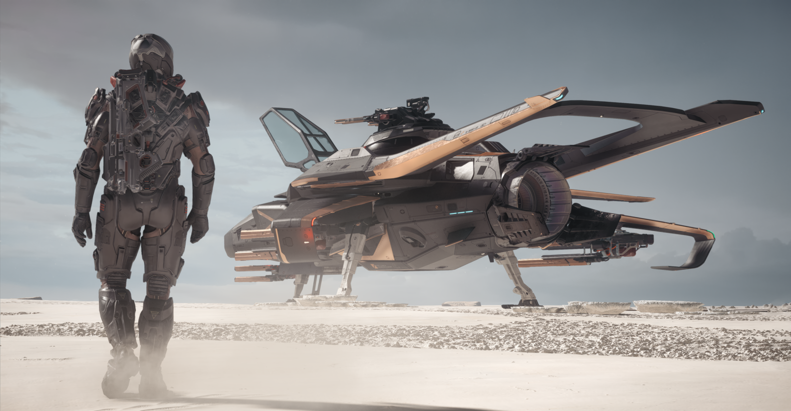

Nell'attesa di Squadron 42, gioca subito a Star Citizen sullo stesso sito

Se stai cercando dove registrarti per Squadron 42, devi sapere una cosa fondamentale: sia Squadron 42 sia Star Citizen sono sviluppati da Cloud Imperium Games e utilizzano lo stesso identico sito ufficiale (robertsspaceindustries.com), lo stesso launcher e lo stesso account utente.
Mentre Squadron 42 (la campagna cinematografica per giocatore singolo) è nella fase finale di rifinitura in vista del lancio previsto nel 2027, Star Citizen è già giocabile fin da oggi! Nell'attesa che esca Squadron 42 puoi quindi entrare subito nell'universo persistente di Star Citizen per:
- Allenarti al volo spaziale e al combattimento (Dogfighting): Il modello di volo fisico, i comandi e i caccia militari dell'UEE (come il Gladius o l'Hornet) sono gli stessi che piloterai in Squadron 42.
- Esplorare un universo vivo senza caricamenti: Visita pianeti, lune, stazioni spaziali e affronta missioni in prima persona da solo o con gli amici della community italiana.
- Sfruttare gli eventi Free Fly gratuiti: Anche senza acquistare subito il gioco, avere l'account RSI attivo ti permette di scaricare e provare gratis Star Citizen durante i numerosi eventi Free Fly dell'anno.